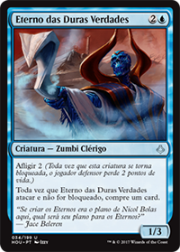
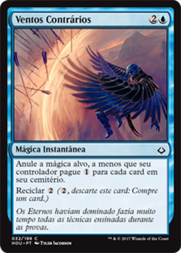
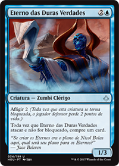
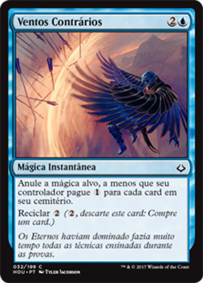

Dêmonios, ladrões, esfinges, esqueletos e metamorfos abrem o caminho da vitória neste Deck que tem por objetivo controlar a mesa e mante-la limpa. Essas criaturas vão e voltam do cemitério com maestria, no entanto elas tem um custo muito alto, e até que seja possível elas entrarem em jogo com segurança, nada deve permancer no campo de batalha. Para este objetivo, muitos removals e contra-jogo devem impedir que o oponente baixe ou utilize suas principais armas.
O deck é dividido em partes, e todas elas devem atuar em conjunto para seu perfeito funcionamento. Primeiro vamos falar dos terrenos, que tem a importatne função de permitir a utilização das couterspells sem prejudicar o turno do jogador, para tanto é importante ter uma base de mana alta, e para isso utilizo 23 terrenos sendo 5 azul e preto, os outros divididos de maneira proporcional entre as cores, com exceção de um que é incolor e pode ser usado para proteger as criaturas que é o Areias Infinitas. Essa distribuição permite que não falte terrenos para cast e counter quando utilizamos draw extra.
 



A segunda parte consiste em cartas de draw, não permitindo que as principais armas do oponente fiquem sem resposta. As principais cartas para draw são Lampejo da Genialidade e Eterno das Duras Verdades, a primeira utiliza mecânica de energia, concedendo 2 energia além de vidência 2 e draw 2, permitindo que o jogador escolha o que mais precisa naquele momento do jogo. A segunda é uma criatura 1/3 que da draw quando não é bloqueada, como ela tem Afligir 2 cabe ao oponente escolher levar 2 de dano, ou 1 e dar o draw pra o jogador controlador. Além disso o Lampejo da Genialidade possui uma ótima sinergia com outras partes do deck que será vista adiante. Também tem a Ventos Contrários que com a mecânica de cycling permite a rotação de cartas no grimório, ou seu uso como counterspell.
Na terceira parte é onde estão todas as cartas de controle de mesa, removals e counterspells. Atualmente o deck tem muito mais removals do que counters, e a cor preta é ideal para isso, mas dependendo do oponente é melhor inverter o jogo e utilizar as counterspells. Os principais removals são o Andar na Prancha e Extração de Essência, o primeiro por poder remover qualquer criatura, independente do seu tamanho, menos tritões, e o segundo pelo roubo de vida baseado no dano causado. Destruir os Fracos (2B) também tem sua importancia devido ao custo de mana diferenciado em relação ao Extração de Essência (1BB), essa diferença nas cores permite uma maior liberdade no seu uso. A carta Prova da Ambição (1B) também tem seu papel combando com as Cártula da Ambição (2B). No entanto, tirando o Andar na Prancha, eles são removals apenas para criaturas pequenas, no caso de decks que usam criaturas grandes, é melhor impedir a entrada delas utilizando counterspells. As counterspells fazem com que a criatura ou outras magicas, sejam eliminadas antes de entrarem no campo de batalha, aqui e nos draws a cor azul faz seu papel. A razão dos removals serem melhores em outras situações é que eles podem ser jogados a qualquer momento, diferente das counterspells, que so podem ser jogadas como resposta a algo. As principais cartas são Espalhar Essência, Negar, e Cancelar.
Todas as mecanicas e categorias de cartas citadas acima fazem parte do controle total da mesa, não permitindo que o oponente traga ao jogo suas melhores armas. Por ser um deck com apenas 10 criaturas (incluido as repetidas), é muito importante que o controle seja bem estabelecido. Algumas criaturas e artefatos tem a função de gerar energia, essa mecanica permite que habilidades possam ter um custo diferente da tradicional mana, a quantidade de energia de um jogador so diminui quando ele a utiliza, o que a torna uma otima mecanica para decks de controle. As cartas que tem função de gerar energia são Sifonadora Braço-luz (1B), Torre Dinavolt (3) e Demônio dos Esquemas Sombrios (3BBB). As duas últimas são ótimas condições de vitória, o demônio permite que uma criatura do cemitério volte pra o campo de batalha, além de ser um 5/5 que voa, da -2/-2 a todas as criaturas em campo ao entrar, e o jogador ganha energia sempre que outra criatura morre, e a Torre Dinavolt gera energia na medida em que instantâneas ou feitiços são utilizadas dando um ótimo suporte tanto pra destruir outras criaturas ou dar dano ao oponente utilizando-a ou alimentar o Demônio dos Esquemas Sombrios, essas cartas devem entrar em campo com segurança. Como Wildcard o deck possui duas cópias do Vizir das Muitas Faces (2UU), que pode entrar em campo como cópia de qualquer criatura, dando maior poder as anteriormente citadas, ou copiando as criaturas do oponente que possam fazer uma diferença positiva no jogo, lembrando que a mecanica de embalçamar (3UU) permite que ela volte ao campo depois de morrer, se morrer. Por fim, Esfinge de Magosi (3UUU) 6/6 entra em campo voando, causando um grande desequilibrio com draw extra a cada turno se o jogador quiser, e crescendo infinitamente a cada turno, se o jogo permitir.
Eric Freitas